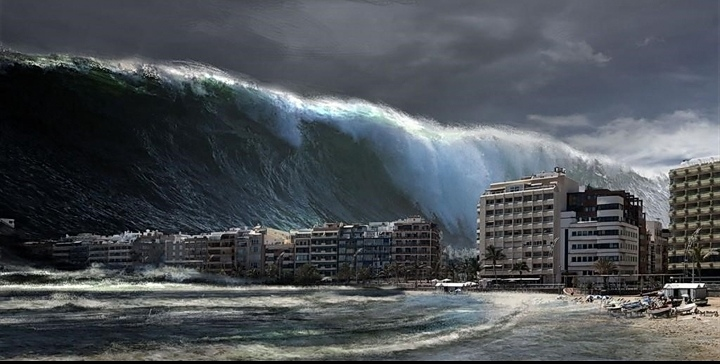

TSUNAMI

A tsunami is a series of waves in a water body caused by the displacement of a large volume of water, generally in an ocean or a large lake. Earthquakes, volcanic eruptions and other underwater explosions above or below water all have the potential to generate a tsunami.
Tsunami waves do not resemble normal undersea currents or sea waves because their wavelength is far longer. Rather than appearing as a breaking wave, a tsunami may instead initially resemble a rapidly rising tide.For this reason, it is often referred to as a tidal wave,although this usage is not favoured by the scientific community because it might give the false impression of a causal relationship between tides and tsunamis.Tsunamis generally consist of a series of waves, with periods ranging from minutes to hours, arriving in a so-called "wave train."Wave heights of tens of metres can be generated by large events. Although the impact of tsunamis is limited to coastal areas, their destructive power can be enormous, and they can affect entire ocean basins. The 2004 Indian Ocean tsunami was among the deadliest natural disasters in human history, with at least 230,000 people killed or missing in 14 countries bordering the Indian Ocean.